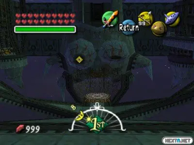

El Templo de Torre de piedra es el último templo que encontrarás en el juego "The Legend of Zelda: Majora's Mask". Tienes que tener en cuenta que es un templo bastante complejo en comparación con los demás. Ya al haber llegado hasta este punto, necesitarás de estos items básicos para poder completarlo:
- Escudo Espejo
- Canción "Elegía al Vacío"
- Bombas
- Gancho
- Esto es opcional, pero la máscara de piedra, ya que esta permite que los enemigos te ignoren y así evitar combates innecesarios.
Consejos Adicionales
- Utiliza el Escudo Espejo para reflejar los rayos de luz que se encuentran en ciertas secciones para poder activar ya sea cofres o habitaciones secretas de el templo, y asi poder descubrir ya sea llaves normales o otros elementos que se encuentran en el templo
- Aprende y toca la Canción "Elegía al Vacío" en los lugares donde veas que hay switches de presion, dependiendo del tamaño, tendras que usar diferentes de las mascaras principales que ya tienes(ya sea la mascara zora, la Goron, etc)
- Usa las Bombas para destruir obstáculos y abrir caminos secretos.
- Si decides usar la máscara de piedra, recuerda que puedes evitar combates, pero también recuerda que hay ciertos enemigos a los cuales no podrás evitar y tendrás que enfrentarte a ellos.
Templo Normal
Nada más entrar al templo, pasa por la puerta de la izquierda. En la segunda habitación, rompe una pared con grietas usando una bomba y destruye las cajas con Link En el patio exterior (tercera sala), hay una puerta cerrada, otra que baja a la planta B1 y un suelo rompible. Usa bombas para abrir un agujero o baja por las escaleras. En la planta B1, refleja la luz del techo con el Escudo Espejo hacia un bloque con un Sol para hacerlo desaparecer. Usa Link Goron para cruzar la lava y conseguir el Mapa del Templo. Destruye todas las estatuas excepto dos para que aparezca un cofre con una Llave Pequeña. Vuelve a la planta 1F. Abre la puerta cerrada en el patio exterior con la llave. En la quinta habitación, usa Link Zora para bucear y deja que una mano te lance a una zona con un cofre (otra llave). Luego avanza por un pasillo inundado hasta la siguiente sala. En la sexta sala, usa la luz y el Escudo Espejo para reflejarla hacia un espejo. Luego úsala para eliminar un bloque con Sol y obtener la Brújula del Templo. Abre la puerta cerrada con la segunda llave para seguir. En la séptima habitación, rompe una columna con Link Goron para dejar entrar la luz. Usa el Escudo Espejo para redirigir la luz entre los espejos y eliminar otro bloque con Sol. Avanza por la puerta que se desbloquea. En la octava sala, transfórmate en Link Deku y usa la Flor Deku para volar sobre corrientes de aire hasta una puerta. En la novena habitación, enfréntate al Maestro Garo. Bloquea y ataca con la espada o usa Ataque Remolino. Al vencerlo, obtienes las Flechas de Luz. Pasa por la puerta liberada. En la décima sala, sube por una zona elevada. Elimina al Hiploop usando el Gancho para quitarle la máscara y luego golpéalo. En la undécima sala, derrota al robot Eyegore disparando al ojo cuando esté amarillo. Tras vencerlo, accede a una puerta que lleva de vuelta a la primera habitación. De vuelta en la primera sala, sal por donde entraste. Verás 3 interruptores: colócate sobre el derecho como Link Niño y crea un clon con la Elegía al Vacío. Al hacerlo, se moverá un bloque que revela una Joya Roja. Dispara una Flecha de Luz a la joya para que el templo entero se dé la vuelta: el techo se convierte en suelo y viceversa.

Templo Invertido
En el templo al revés, avanza por la puerta derecha desde la primera sala para llegar a la sexta, donde debes disparar una Flecha de Luz al bloque con Sol para eliminarlo. Usa una Flor Deku para volar a una pasarela elevada, derrota al Hiploop, y pisa un interruptor como Link Niño para hacer aparecer un cofre con una Llave Pequeña. Con ella, vuela a una repisa en el noroeste y abre la puerta que lleva a la Planta 2F. En la Planta 2F, dispara a la Joya Roja del techo para girar la sala, cruza la lava con Link Goron, y vuelve a disparar para restaurar la sala y avanzar. En la siguiente habitación, usa varias Flechas de Luz para girar la sala y mover un bloque por distintas paredes hasta insertarlo en un hueco que desbloquea una puerta. Luego, colócate frente a esa puerta, vuelve a girar la sala dos veces para caer justo frente a ella y pasar. En la siguiente sala derrota a un Wizrobe y usa el Gancho para alcanzar el cofre. Luego baja a la Planta 1F. En la tercera sala, cruza con Link Deku usando flores y entra en un pasillo elevado. En la segunda sala, pisa un interruptor y usa la Elegía al Vacío para quitar el fuego de un cofre con otra Llave Pequeña. Vuelve a la sala anterior y usa la nueva llave para avanzar a la quinta sala. Usa Link Deku para volar por encima de pinchos y cruzar a la siguiente sala. Pasa por un pasillo con calaveras hasta llegar a la decimocuarta habitación, donde enfrentas a Gomess. Dispárale una Flecha de Luz para espantar los murciélagos, luego ataca su joya verde hasta derrotarlo y conseguir la Llave Grande. Regresa a la quinta sala, cruza de nuevo como Link Deku y ve por la puerta en la esquina suroeste para volver a la primera habitación. Allí, pisa un interruptor para hacer aparecer un cofre en el techo, usa el Gancho para llegar a él y caer frente a una puerta cerrada. Úsala para llegar a una pasarela en la quinta sala, donde te enfrentas a un Eyegore. Derrótalo usando flechas o gancho y obtén la Máscara del Gigante. Finalmente, en la décima habitación, dispara al interruptor de cristal para hacer aparecer un cofre en el techo. Usa el Gancho para llegar a él y sortear un rodillo de pinchos, luego engancha otra diana para caer junto a la puerta del jefe. Cruza y enfréntate a Twinmold, el boss del templo.
Finalmente, pasaremos a la seccion de la guia de como derrotar a Twinmold, que es el Jefe de este templo.